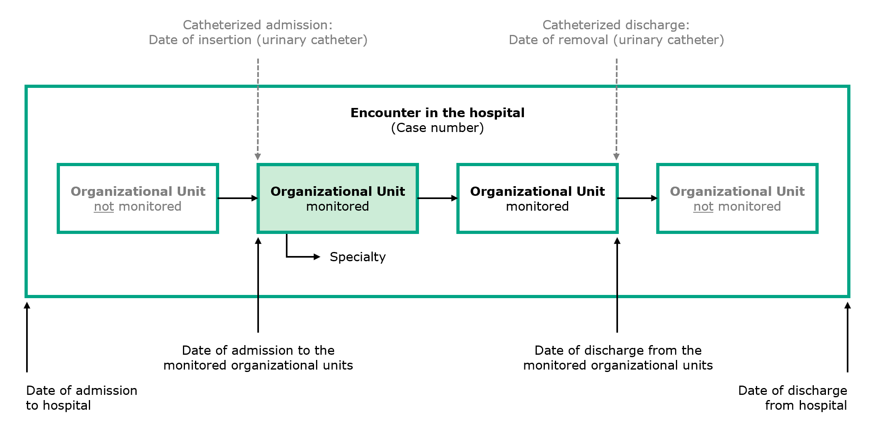

Swissnoso Implementation Guide (R4)
1.0.0 - STU 1

Swissnoso Implementation Guide (R4)
1.0.0 - STU 1

This page is part of the Swissnoso Implementation Guide (R4) (v1.0.0: STU 1) based on FHIR R4. This is the current published version. For a full list of available versions, see the Directory of published versions 
Frau Anna Meier, Jahrgang 1933, tritt am 24.06.2021 in die chirurgische Abteilung des Spitals Tannenwald ein. Die Spitaladministration eröffnet für diesen stationären Aufenthalt einen Fall mit der Fall-Nummer 14200210624.
Frau Meier wird am 01.07.2021 planmässig operiert. Vor der Operation wird ihr auf der Bettenstation ein Blasenkatheter eingelegt, der am 04.07.2021 wieder entfernt wird. Nachdem die Operation ohne Komplikationen verlaufen ist, kann Anna Meier das Spital am 08.07.2021 verlassen.
Das Spital Tannenwald übermittelt die Falldaten der Patientin Anna Meier im Rahmen der CAUTI Surveillance an Swissnoso.
Herr Fridolin Müller, Jahrgang 1931, wird am 06.07.2021 auf dem medizinischen Notfall des Spitals Tannenwald aufgenommen, da sich sein Gesundheitszustand plötzlich verschlechtert hat. Ein Fall mit der Fall-Nummer 181521210706 wird eröffnet.
Fridolin Müller klagt über Symptome, er hat Fieber und Unterbauchschmerzen, die sich bei Druck verstärken. Da der Verdacht auf eine Harnwegsinfektion besteht, wird eine Urinprobe abgenommen. Wegen seiner Inkontinenz und einem Druckgeschwür am Steissbein wird Fridolin Müller bereits auf der Notfallstation ein Blasenkatheter gelegt. Nach den ersten Abklärungen wird er auf die medizinische Bettenstation verlegt, wo es ihm dank der Antibiotikatherapie bald besser geht. Das Laborresultat bestätigt den Verdacht, es handelt sich um eine Harnwegsinfektion mit den zwei Keimen E. coli und Enterokokken mit jeweils einer Keimzahl im Urin von >=10E5 CFU/ml. Am 09.07.2021 wird der Blasenkatheter entfernt, wegen Harnverhalt muss Fridolin Müller aber am gleichen Tag erneut katheterisiert werden. Am 10.07.2021 kann Fridolin Müller das Spital verlassen (katheterisierter Austritt, siehe auch Abbildung unten Overview organizational units).
Das Spital Tannenwald übermittelt die Falldaten des Patienten Fridolin Müller im Rahmen der CAUTI Surveillance an Swissnoso.
Frau Giulia Rossi, Jahrgang 1943, tritt am 08.07.2021 in die medizinische Abteilung (Fachrichtung Allgemeinmedizin) des Spitals Santa Maria ein. Ein Fall mit der Fall-Nummer 44371210708 wird eröffnet.
Wegen eines Harnverhalts wird bei ihr am gleichen Tag auf der Bettenstation ein Blasenkatheter gelegt. Da die Patientin Symptome aufweist, also über subrapubische Schmerzen klagt, wird der Katheter am 09.07.2021 entfernt und eine Urinprobe abgenommen. Die mikrobiologische Analyse weist im Urin einen Keim nach, und zwar E. coli mit einer Keimzahl von <10E5 CFU/ml, weshalb auf eine Antibiotikagabe verzichtet wird.
Ein paar Tage später, am 14.07.2021, werden bei Giulia Rossi neben den suprapubischen Schmerzen weitere Symptome festgestellt, die auf eine Harnwegsinfektion hindeuten. Neben Harndrang hat Giulia Rossi starke Schmerzen beim Wasserlassen und muss häufig in kleinen Mengen Wasserlassen. Aufgrund des Verdachts wird am 14.07.2021 erneut eine mikrobiologische Analyse durchgeführt, die wiederum einen Keim zeigt. Eine E.coli-Infektion mit einer Keimzahl im Urin von >=10E5 CFU/ml wird nachgewiesen. Giulia Rossi erhält Antibiotika und wird am 16.07.2021 aus dem Spital entlassen.
Das Spital Santa Maria übermittelt die Falldaten der Patientin Giulia Rossi im Rahmen der CAUTI Surveillance an Swissnoso.
Herr Jean-Luc Richard, Jahrgang 1945, wird am 10.07.2021 mit diffusen Schmerzen im Oberbauch, Übelkeit und Fieber (38.1°C) in der medizinischen Abteilung des Spitals Bellevue aufgenommen, das mit der Chirurgie und der Intensivmedizin an der CAUTI Surveillance teilnimmt. Ein Fall mit der Fall-Nummer 102938210710 wird eröffnet.
Wegen eines Harnverhalts wird bei Jean-Luc Richard am gleichen Tag auf der Bettenstation ein Blasenkatheter gelegt. Im Rahmen der weiteren Abklärungen wird am 11.07.2021 eine Gallenblasenentzündung diagnostiziert und Jean-Luc Richard wird am 12.07.2021 für eine Cholezystektomie auf die Chirurgie (Fachrichtung Abdominalchirurgie) verlegt. Nach der Operation treten Komplikationen auf, und Jean-Luc Richard muss am 13.07.2021 auf die Intensivstation verlegt werden, wo er bis am 15.07.2021 bleibt. Anschliessend wird er wieder auf die chirurgische Abteilung verlegt, wo am 16.07.2021 der Blasenkatheter entfernt wird. Am 21.07.2021 verlässt Jean-Luc Richard das Spital Bellevue.
Das Spital Bellevue übermittelt die Falldaten des Patienten Jean-Luc Richard im Rahmen der CAUTI Surveillance an Swissnoso.
Im Anwendungsfall von Herr Jean-Luc Richard (UC 102938) wird die Situation des Spitals Bellevue dargestellt, das mit einzelnen Organisationseinheiten und nicht als ganzes Spital an der CAUTI Surveillance teilnimmt. Die untenstehende Abbildung stellt für solche Fälle verallgemeinert dar, welche Angaben relevant sind und wie sie im Bezug zu der/den überwachten Organisationseinheit/en stehen.
Details zu den überwachten Organisationseinheiten können dem Surveillance-Handbuch S. 9 entnommen werden.
Fig.: Overview organizational units
